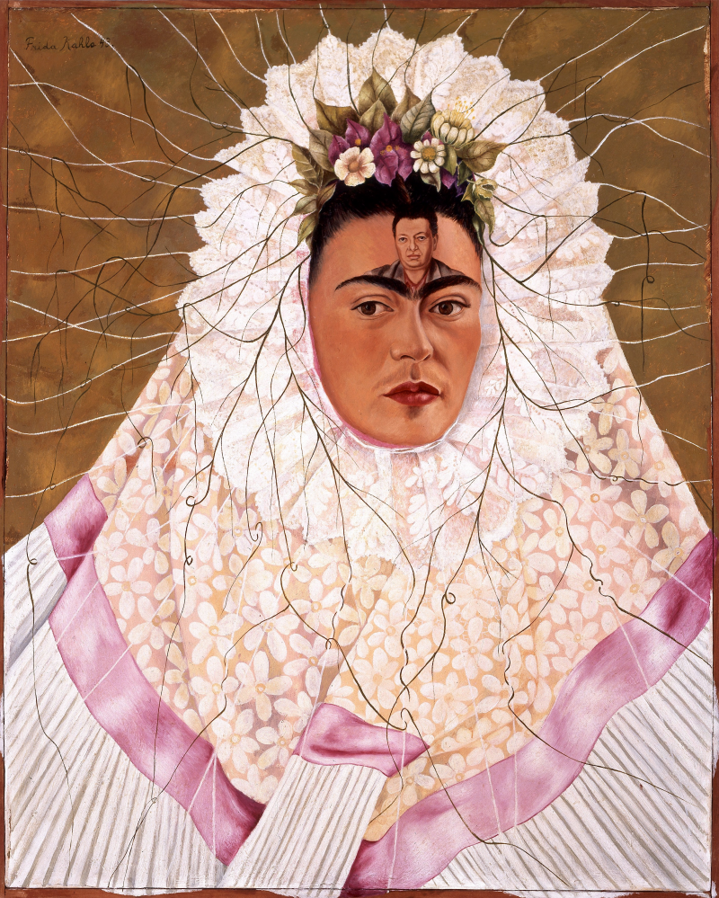

Exhibitions
Revisionist Modernism, The Museum of Contemporary Art, Washington, D.C., US, December 2, 1994–January 1, 1995.


Literature
Zephyr, “Modern English,” Juxtapoz Magazine, vol. 5, no. 1, 1998, p. 39.


Judith Schlesinger, “English as a Second Language,” Topia, Spring 1997, p. 10.

Zephyr, “Article by Zephyr – Ron English Interview,” Juxtapoz, 1998, p. 38.

Provenance
Artist's personal collection.
Ancillary Documentation
The following materials document references cited for this work.
